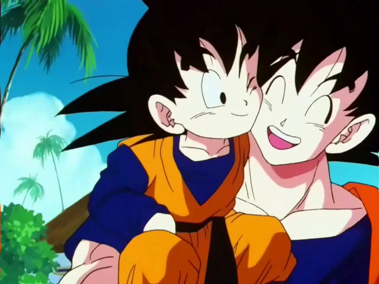
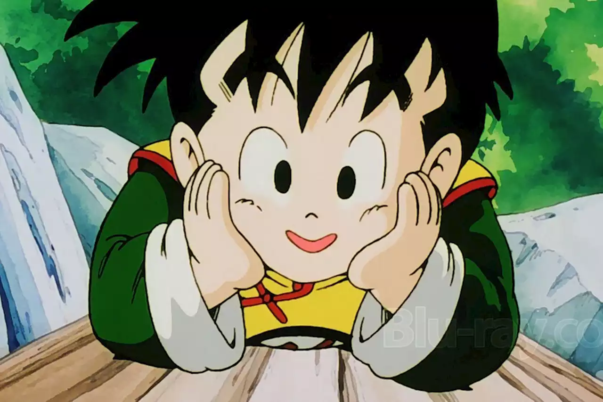

Son Goku, conocido como Gokú en Hispanoamérica, es el protagonista principal del manga y anime de Dragon Ball. Su nombre real y de nacimiento es Kakarotto y es uno de los pocos saiyanos que lograron sobrevivir a la destrucción total del Planeta Vegeta del Universo 7.
Es el segundo hijo de Bardock y Gine, hermano menor de Raditz y nieto adoptivo de Son Gohan.

Son Goten, llamado también simplemente Goten, es el segundo hijo de Chi-Chi y Son Goku, y hermano menor de Son Gohan, que nació al poco tiempo de la segunda muerte de su padre.
En su niñez, Goten es muy parecido a su padre, con el mismo estilo de peinado que Son Goku, un rostro risueño y piel de tez rosada heredada directamente de su madre.

Son Gohan es un personaje ficticio de la serie de manga Dragon Ball, creada por Akira Toriyama. Gohan es presentado como el primer hijo del protagonista Goku y su esposa Chi-Chi. Hace su primera aparición en el capítulo # 196 Kakarrot, publicado por primera vez en la revista Weekly Shōnen Jump el 8 de octubre de 1988.
